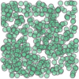
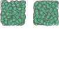
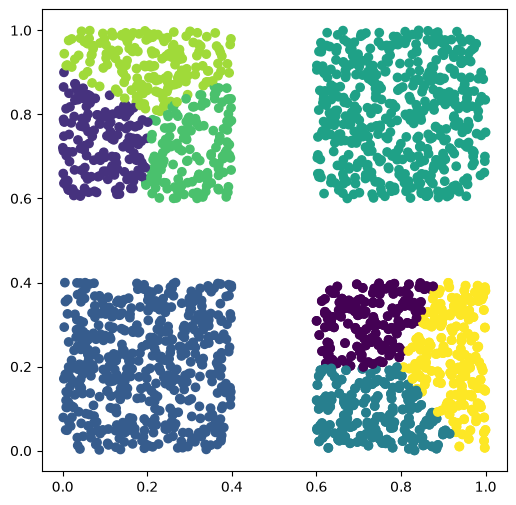
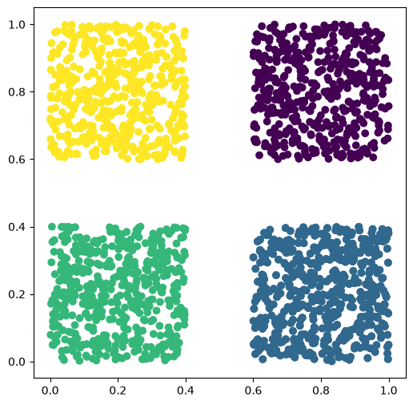
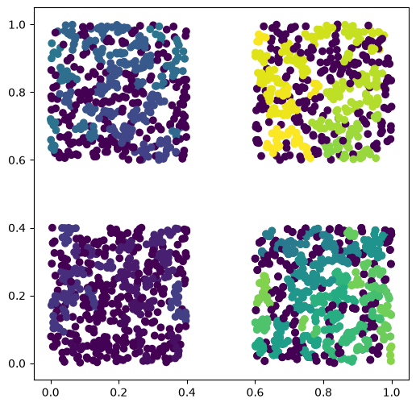
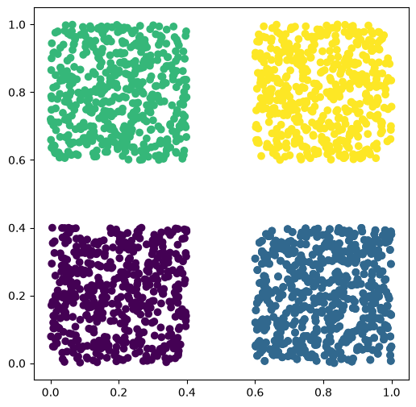

data_points
def data_points(
n, min_x:int=0, min_y:int=0, max_x:int=1, max_y:int=1, seed:NoneType=None
):Una clase que contiene a los datos
def data_points(
n, min_x:int=0, min_y:int=0, max_x:int=1, max_y:int=1, seed:NoneType=None
):Una clase que contiene a los datos
clase_puntos.get_Multypoint()
A partir de la clase data_point podemos generar muchos puntos y queremos hacer un agrupamiento de dichos puntos
def Clusters(
data_points_i, seed:int=1234
):Clase para generar los clusters a partir de un objeto de la clase data_points
Esta clase se utiliza para generar los distintos tipos de clusterizaciones, se almacena los datos en una estructura de datos y se le añaden las respectivas classes
def DBSCAN(
**kwargs
):Se DBSCAN para la obtencion de clusters, las clases quedan almacenadas en .data_structure_classes_DBSCAN. Si se desea obtener el modelo se tiene que añadir (ret_model = True) como parámetro.
def KMeans(
**kwargs
):Se usa el algoritmo Kmeans para la obtencion de clusters, las clases quedan almacenadas en .data_structure_classes_Kmeans. Si se desea obtener el modelo se tiene que añadir (ret_model = True) como parámetro.
def HDBSCAN(
**kwargs
):Se HDBSCAN para la obtencion de clusters, las clases quedan almacenadas en .data_structure_classes_HDBSCAN. Si se desea obtener el modelo se tiene que añadir (ret_model = True) como parámetro.
def OPTICS(
**kwargs
):Se usa el algoritmo OPTICS para la obtencion de clusters, las clases quedan almacenadas en .data_structure_classes_OPTICS. Si se desea obtener el modelo se tiene que añadir (ret_model = True) como parámetro.
datos_simples_3 = data_points(500, min_x = 0.6, min_y= 0.6, max_x= 1.0, max_y= 1.0 )
datos_simples_2 = data_points(500, min_x = 0.0, min_y= 0.6, max_x= 0.4, max_y= 1.0 )datos_simples_1 = data_points(500, min_x = 0.6, min_y= 0.0, max_x= 1.0, max_y= 0.4 )
datos_simples_0 = data_points(500, min_x = 0.0, min_y= 0.0, max_x= 0.4, max_y= 0.4 )
datos_simples_0.add_points(datos_simples_1)datos_simples_0.get_Multypoint()
datos_simples_0.get_Multypoint()
datos_simples_0.add_points(datos_simples_1)
datos_simples_0.add_points(datos_simples_2)
datos_simples_0.add_points(datos_simples_3)Vamos a utilizar nuestra clase clusters para ver como los distintos algoritmos hacen una clusterización
cluster_all = Clusters(datos_simples_0)cluster_all.OPTICS()cluster_all.HDBSCAN()/home/miguel/conda_previus/envs/nbdev_2026_t/lib/python3.13/site-packages/sklearn/cluster/_hdbscan/hdbscan.py:722: FutureWarning: The default value of `copy` will change from False to True in 1.10. Explicitly set a value for `copy` to silence this warning.
warn(cluster_all.DBSCAN(eps=0.1, min_samples=10)cluster_all.KMeans()fig, ax = plt.subplots(1, 1, figsize=(6, 6))
plt.scatter(
cluster_all.data_structure.get_X(),
cluster_all.data_structure.get_Y(),
c=cluster_all.data_structure.classes_Kmeans
)
Veamos en cuantas clases se agruparon
np.unique(cluster_all.data_structure.classes_Kmeans)array([0, 1, 2, 3, 4, 5, 6, 7], dtype=int32)np.unique(cluster_all.data_structure.classes_DBSCAN)array([0, 1, 2, 3])np.unique(cluster_all.data_structure.classes_OPTICS)array([ -1, 0, 1, 2, 3, 4, 5, 6, 7, 8, 9, 10, 11,
12, 13, 14, 15, 16, 17, 18, 19, 20, 21, 22, 23, 24,
25, 26, 27, 28, 29, 30, 31, 32, 33, 34, 35, 36, 37,
38, 39, 40, 41, 42, 43, 44, 45, 46, 47, 48, 49, 50,
51, 52, 53, 54, 55, 56, 57, 58, 59, 60, 61, 62, 63,
64, 65, 66, 67, 68, 69, 70, 71, 72, 73, 74, 75, 76,
77, 78, 79, 80, 81, 82, 83, 84, 85, 86, 87, 88, 89,
90, 91, 92, 93, 94, 95, 96, 97, 98, 99, 100, 101, 102,
103, 104, 105, 106, 107, 108, 109, 110, 111, 112, 113, 114, 115,
116, 117, 118, 119, 120, 121, 122, 123, 124, 125, 126, 127, 128,
129, 130, 131, 132, 133, 134, 135, 136, 137, 138, 139, 140, 141,
142, 143, 144, 145, 146, 147, 148, 149, 150, 151, 152, 153, 154,
155, 156, 157, 158, 159, 160, 161, 162, 163, 164, 165, 166, 167,
168, 169, 170, 171, 172, 173, 174, 175, 176, 177, 178, 179, 180,
181, 182])np.unique(cluster_all.data_structure.classes_HDBSCAN)array([0, 1, 2, 3])fig, ax = plt.subplots(1, 1, figsize=(6, 6))
plt.scatter(
cluster_all.data_structure.get_X(),
cluster_all.data_structure.get_Y(),
c=cluster_all.data_structure.classes_HDBSCAN
)
fig, ax = plt.subplots(1, 1, figsize=(6, 6))
plt.scatter(
cluster_all.data_structure.get_X(),
cluster_all.data_structure.get_Y(),
c=cluster_all.data_structure.classes_OPTICS
)
fig, ax = plt.subplots(1, 1, figsize=(6, 6))
plt.scatter(
cluster_all.data_structure.get_X(),
cluster_all.data_structure.get_Y(),
c=cluster_all.data_structure.classes_DBSCAN
)